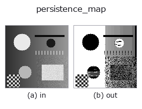

morphology op• 資料種類:image → image
• 呼叫:fullseye.apply(img, "persistence_map", a=0.5, b=0.5)(2-D 的模型是一張圖 + 兩個純量旋鈕 a,b∈[0,1])

*圖為在 128×128 合成輸入上實際執行的輸出。左為輸入，右為輸出。點雲以俯視散點顯示(亮度 = z)，一維序列為折線，體資料為沿 z 的最大值投影，影片為中間影格，複數影像為振幅；無法成像的回傳值直接顯示數值。*
掃描旋鈕 a(0.1 / 0.5 / 0.9，另一旋鈕取預設):
▸ persistence_map: 旋鈕 a 掃描 (文件網站)
掃描旋鈕 b(0.1 / 0.5 / 0.9，另一旋鈕取預設):
▸ persistence_map: 旋鈕 b 掃描 (文件網站)
換別的影像(合成場景 / 照片 / 硬幣。上排為輸入，下排為對應輸出。旋鈕取預設):
▸ persistence_map: 其他輸入影像 (文件網站)
*第 4 欄是彩色 (H,W,3) 輸入。此運算子能正確處理顏色而不跨通道(不把顏色通道當作第三個空間軸摺積)。*
不選取閾值地測量「山峰的顯著程度」(0 維持續性)。
只選 1 個閾值會讓適用範圍變窄 —— 這一矛盾可以透過「試遍所有閾值，只保留結果不變的部分」來解決。從高處逐步降低水位，把新山峰出現時的高度(誕生)與該山峰被更高山峰吞併時的高度(消亡)之差，作為該山峰的 persistence(顯著程度)。這正是地形學中所說的「突出度(prominence)」。
輸出是在每個像素中存入「該像素所屬山峰的 persistence」的地圖。a 是保留的下限(低於它的山峰設為 0)，b 是連通方式(小於 0.5 為 4 鄰域，否則為 8 鄰域)。
h_maxima / MSER 的差異：xsk2_h_maxima 選定 1 個 h，回傳「高於它的山峰」 —— 也就是選定了 1 個閾值。本 op 則是 把所有 h 的答案摺疊進 1 張圖，因此之後可以在任意水準上切分。MSER 尋找「面積穩定的區域」，思路相近，但它看的是區域形狀，本 op 看的是高度。
適用條件：(1) 整張影像中最高的山峰不會消亡，因此依慣例以 最大值 - 最小值 作為其 persistence。因此背景具有全域最大值(1.0) —— 背景最後才被處理，此時所有分量都已合併，因此在拓撲意義上它確實屬於全域分量。這是讀取山峰高度的地圖，而不是把背景設為 0 的地圖。若想去掉背景，可與閾值 op 相乘，或用 a 提高下限(實測：a=0.45 時只有高度 0.3 的山峰消失，1.0 和 0.6 保留)。(2) 平坦的台地(連續相同的值)被視為 1 個山峰。(3) 計算是依降序掃描像素的 union-find，因此在大影像上比 h_maxima 慢。
• 範例資料目錄(下載 URL / 授權) —— 2-D 用 skimage.data(BSD/公有領域)加合成圖,3-D 給出真實資料源(Stanford/PDS 等)的下載 URL。
• 運算子來歷與參考文獻 —— 該運算子族所依據的研究/方法出處。
• 演算法的正典(作者、年份)與用途見上面的族使用指南。
下面的程式已確認可以執行(與圖相同的輸入)。在 Studio 說明中，此區塊會變成按鈕，可當場載入並執行。
persistence_map 0.35 0.50
• gallery2d_morphology — py -3.11 examples/gallery2d_morphology.py
image 作為輸入)identity · gaussian · mean_box · bilateral · unsharp · median · min_filter · max_filter
morphology)gerode · gdilate · gopen · gclose · runlength_smear · tophat · bothat · morph_grad
*Provenance: ops.py — 2D 運算子登記表。本條目由 tools/opdocs.py md 自動產生(請勿手動編輯)。*
© 2026 Kazufumi Furuse — Fullseye operator documentation. Licensed under Apache-2.0.